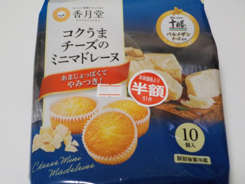

香月堂のコクうまチーズのミニマドレーヌ。
2022/12/26

個袋を開けるとコンガリしたチーズのいい香りがしました。パッケージにありますが、明治十勝パルメザンチーズが効いてる感じがしました。
小さくて軽くて甘さ控えめなので、次々食べたくなりました。
間食にパクパク食べようと思ってます。
愛知県豊川市白鳥町兎足1番地10
2022/12/26

個袋を開けるとコンガリしたチーズのいい香りがしました。パッケージにありますが、明治十勝パルメザンチーズが効いてる感じがしました。
小さくて軽くて甘さ控えめなので、次々食べたくなりました。
間食にパクパク食べようと思ってます。